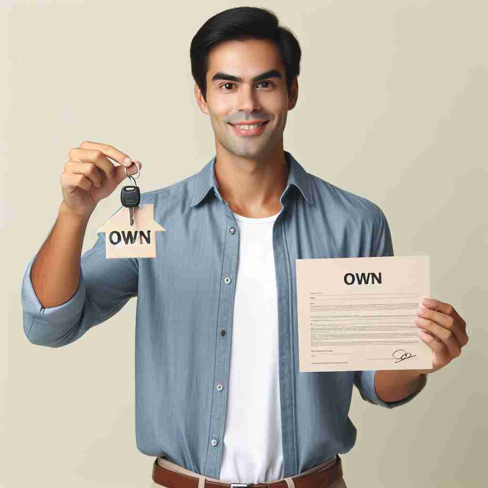

💬 He wants to own a bicycle like this one.

💬 They are proud to own a house together.
💬 They proudly own a business in the community.

💬 He is happy to own a house.
🔈 [əʊn]
🗝️ v. to have or possess something as property
🖼️ 在一个繁华的大都市中，一位成就斐然的企业家站在他高档公寓的阳台上，俯视城市的景色。那幢大楼以及无数有形资产，都是他努力奋斗后合法拥有的。这展示了'own'作为拥有某物作为财产的含义。
🔍 想象'own'是一只手紧紧抓住某物。这个核心概念贯穿了所有含义：从实际拥有财产，到拥有想法或感受，再到完全控制或主宰某事。作为形容词时，它强调了某物属于自己或具有独特性。记住这个'紧握'的形象，可以帮助你联想和记忆'own'的各种用法。
💬 He wants to own a bicycle like this one.
💬 They are proud to own a house together.
💬 They proudly own a business in the community.
💬 He is happy to own a house.
🌳 单词 'own' 来源于古英语 'āgen'，表示 '拥有' 或 '自己的'。虽然它比较简单，但也体现了一个基本的概念，即对某物的所有权或控制。
💡 可以联想 'own' 为 'o' -> 'open' + 'wn' -> 'win'，即通过拥有来'打开'自己掌控生活的胜利之门。这样可以帮助记忆它与掌控有关的含义。
🗝️ v. to admit or acknowledge
🖼️ 在一个严肃的会议室里，一位年轻的员工站起来，他勇敢地承认自己的错误，对领导说：'我own整个项目的失误，并会努力改进。'这个场景展示了'own'作为承认或认知的含义。
💬 I have to own that I made a mistake.
❓ 从"拥有"延伸到"拥有"某种想法或感受
🗝️ v. to defeat or dominate completely
🖼️ 在一场激烈的篮球比赛中，一位明星球员手握篮球，运球过人，然后以精彩的扣篮引爆全场。他的出色表现使对方不堪一击，完全掌控了比赛，这展示了'own'作为彻底击败或主导的含义。
💬 Our team owned the competition this year.
❓ 从"拥有"延伸到"完全控制"某人或某物
🗝️ adj. belonging to oneself or itself
🖼️ 在一个静谧的图书馆内，一位学生坐在自己专属的座位上，桌上摆满了他自己的学习用具。这种专属于自己的环境让他能专心学习，体现了'own'作为属于自己的含义。
💬 She wrote the story in her own words.
❓ 从动词"拥有"转变为形容词，表示所属关系
🗝️ adj. used to emphasize that someone or something is particular or individual
🖼️ 在一个美术课堂上，每位学生都在为自己的作品进行最后的润色。老师走过来看每件作品，并鼓励道：'每一幅画都有你的own风格，都值得被珍视。'这是'own'用来强调独特性或个体性的含义。
💬 Every child learns at their own pace.
❓ 从"属于自己的"延伸到强调独特性或个别性